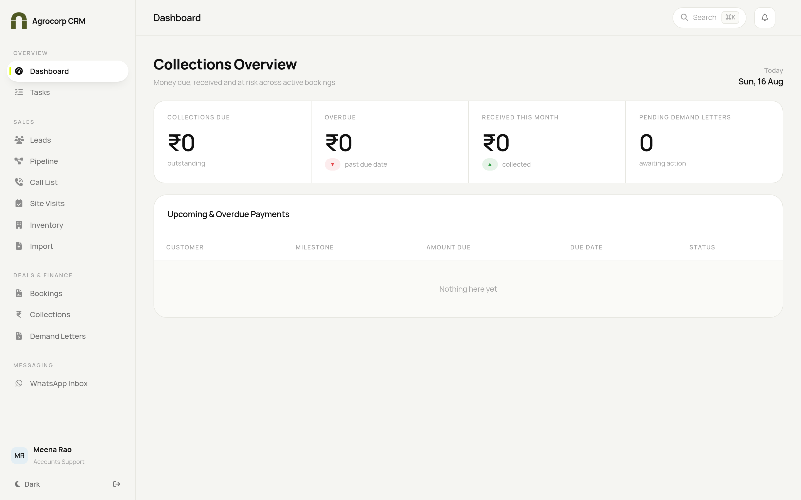
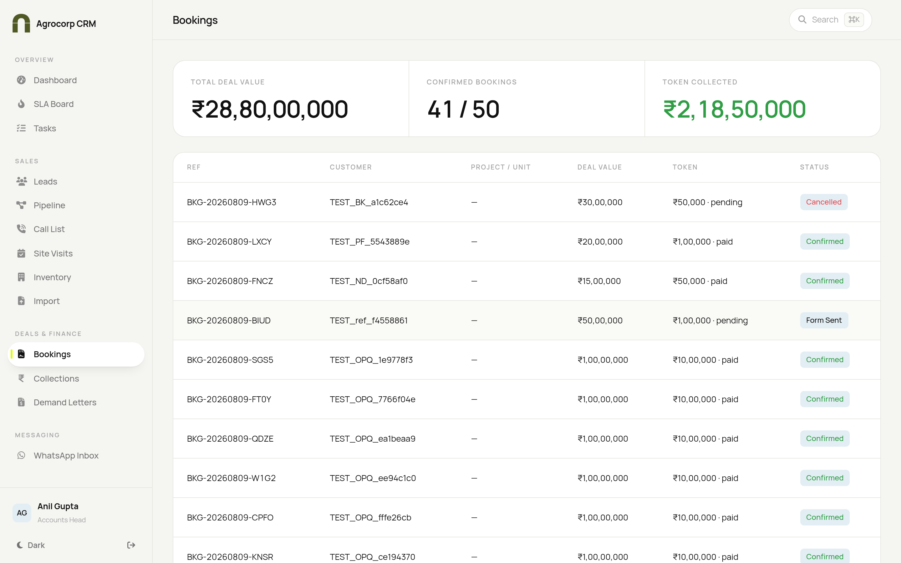
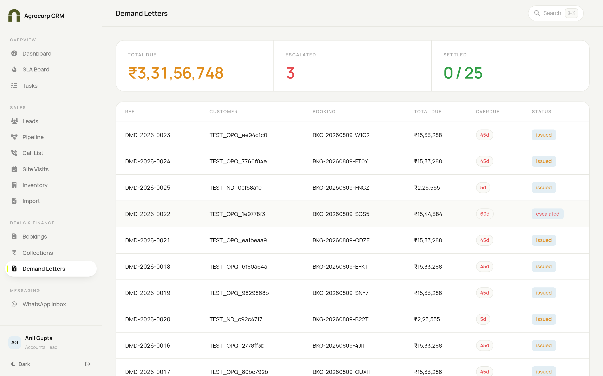

Your playbook for money in Agrocorp CRM — bookings, payments, collections, ageing and demand letters. For Accounts Head and Accounts Support.
Accounts HeadAccounts Support
User Manual · Find your task in the contents and follow the numbered steps.
Agrocorp CRM
Accounts Playbook
Who this guide is for
Role
What you do
Access
Accounts Head
Owns collections & post-sales money
View and manage accounts, post-sales; can verify, edit and take actions
Accounts Support
Assists with accounts tasks
View only — can see accounts and leads, but cannot edit, delete or approve
Difference in one line: the Head can verify payments and take actions; Support can view and help but not change or approve.
Your home screen

Accounts dashboard — a Collections Overview: money due, overdue and received this month, pending demand letters, plus a table of upcoming and overdue payments.
Your day mostly lives in three screens: Bookings, Collections and Demand Letters (all under Deals & Finance).
TASK 1 — Review bookings and token payments

Bookings — total deal value, confirmed count and token collected.
Open Deals & Finance → Bookings.
Read the top summary: Total deal value, Confirmed bookings and Token collected.
Scan the table — each row shows the booking reference, customer, deal value, token and status (Confirmed, Form sent, Cancelled).
Click a booking to open its full record.
Check that the token shows as paid for confirmed deals.
TASK 2 — Record and verify a payment
Open the booking (Task 1) or the customer's record.
Click Add payment / Record receipt.
Enter the amount, date and mode (cheque, transfer, UPI…).
Enter the reference number (transaction/UTR/cheque no.).
Click Save.
Open the payment and click Verify / Reconcile once the money is confirmed in the bank.
A receipt is generated for the customer.
Support staff: you can view all of this but the Verify and edit actions are done by the Accounts Head.
TASK 3 — Track collections and ageing
Collections — collected vs scheduled vs outstanding, with an ageing strip.
Open Deals & Finance → Collections.
Read the three big numbers: Collected, Scheduled and Outstanding.
Look at the Ageing of receivables row — Current, 0–30, 31–60, 61–90, 90+ days.
Scroll to Overdue milestones to see exactly which bookings owe money and by how long.
Prioritise the oldest overdue amounts first.
Why ageing matters: anything drifting into 60+ days needs a call or a demand letter. Use this screen to decide who to chase today.
TASK 4 — Raise and manage demand letters

Demand Letters — total due, escalated and settled, with a full letter list.
Open Deals & Finance → Demand Letters.
Read the top summary: Total due, Escalated and Settled.
To raise a new one, click New demand letter (or the action on an overdue milestone).
Pick the booking / milestone the demand is for.
Check the amount and any interest the system has added for the delay.
The letter gets a unique serial number automatically.
Click Generate / Send.
When the customer pays, open the letter and mark it Settled.
Escalation: letters that stay unpaid move to Escalated so nothing is forgotten.
TASK 5 — Allotment at 10% collection
The CRM tracks how much a customer has paid against their deal.
Once collections reach 10%, the system triggers allotment for that booking.
Coordinate with the Legal team, who take the agreement forward from there.
Quick answers
Question
Answer
Where do I see who owes money?
Collections → Overdue milestones, sorted by how long overdue.
How is interest calculated?
The system adds it automatically on late demand letters.
I can only view, not edit
You're on the Support role — the Accounts Head verifies and edits.
A payment shows unverified
Open it and click Verify once the bank confirms the money.
 Agrocorp™
Agrocorp™